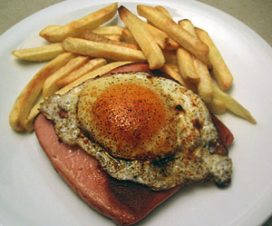

Fleischkäse, Spiegelei und original 123-Frites
4,5 von 6Friten nach Anleitung zubereiten. Fleischkäse in etwas Öl braten, beiseite stellen. Pro Person ein Spiegelei in die Pfanne hauen und auf dem Fleischkäse servieren.

Friten nach Anleitung zubereiten. Fleischkäse in etwas Öl braten, beiseite stellen. Pro Person ein Spiegelei in die Pfanne hauen und auf dem Fleischkäse servieren.

Montagsplausch Nr. 253. Der Abend hiess «E gueteee..».